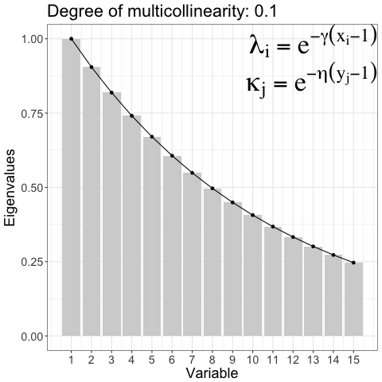
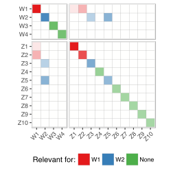
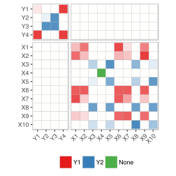
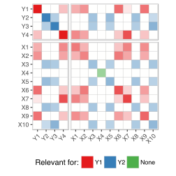
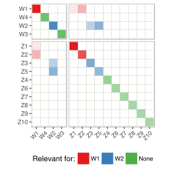
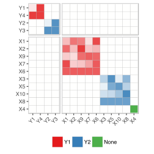

Even the simplest tools can empower people to do great things
12 Mar, 2018
Even the simplest tools can empower people to do great things
Simulated data is used everywhere in research to compare methods, models, algorithms, techniques etc. Simrel can be a common tool for such purpose
Simulate linear model data with wide range of properties using small set of tuning paramters, Example:
Controlling degree of multicollinearity in the simulated data
Specifying the relevant principle components for prediction

Reduction of regression Model: A Predictor sub-space ( blue) is relevant for informative response sub-space ( green)

\[\begin{bmatrix}y \\ x \end{bmatrix} \sim \text{N}\left( \begin{bmatrix} \mu_y \\ \mu_x \end{bmatrix}, \begin{bmatrix} \Sigma_{yy} & \Sigma_{yx}\\ \Sigma_{xy} & \Sigma_{xx} \end{bmatrix} \right)\]
Define a linear tranformation as \(z = Rx\) and \(w = Qy\). For any orthogonormal matrix \(R\) and \(Q\), we can imagine them as a rotation (eigenvector) matrix, so,
\[\begin{bmatrix}y \\ x \end{bmatrix} \sim \text{N}\left( \begin{bmatrix} Q^t\mu_w \\ R^t\mu_z \end{bmatrix}, \begin{bmatrix} Q^t\Sigma_{ww}Q & Q^t\Sigma_{wz}R\\ R^t\Sigma_{zw}Q & R^t\Sigma_{zz}R \end{bmatrix} \right)\]
There are \(\frac{1}{2}(p + m)(p + m + 1)\) unknowns to identify this model. But, …





